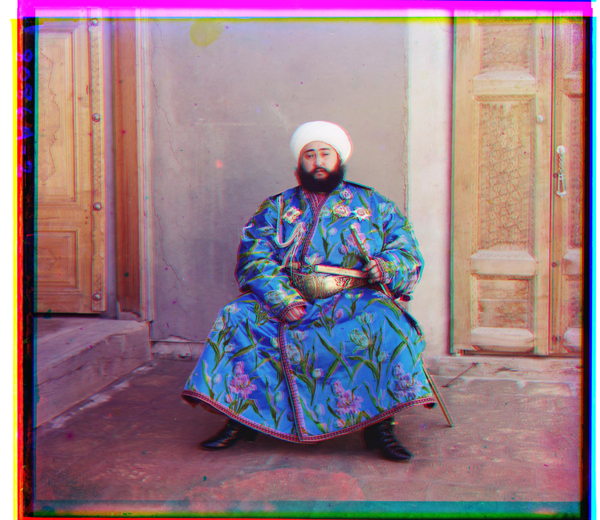
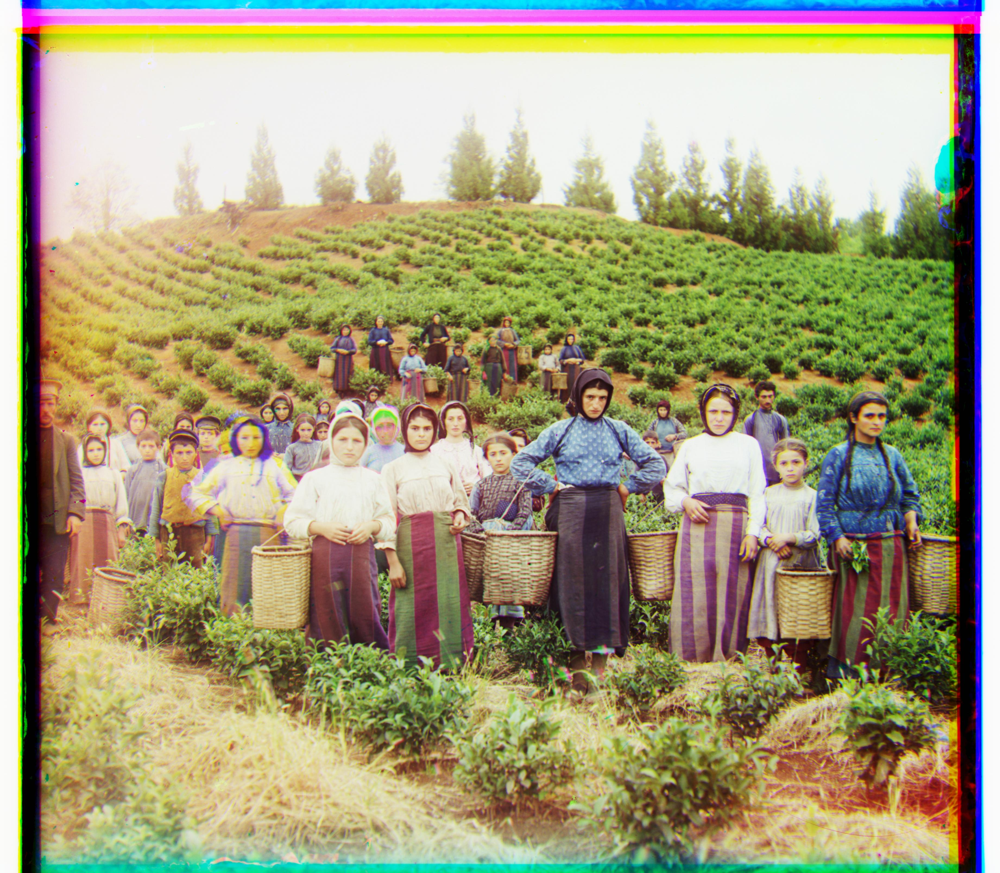
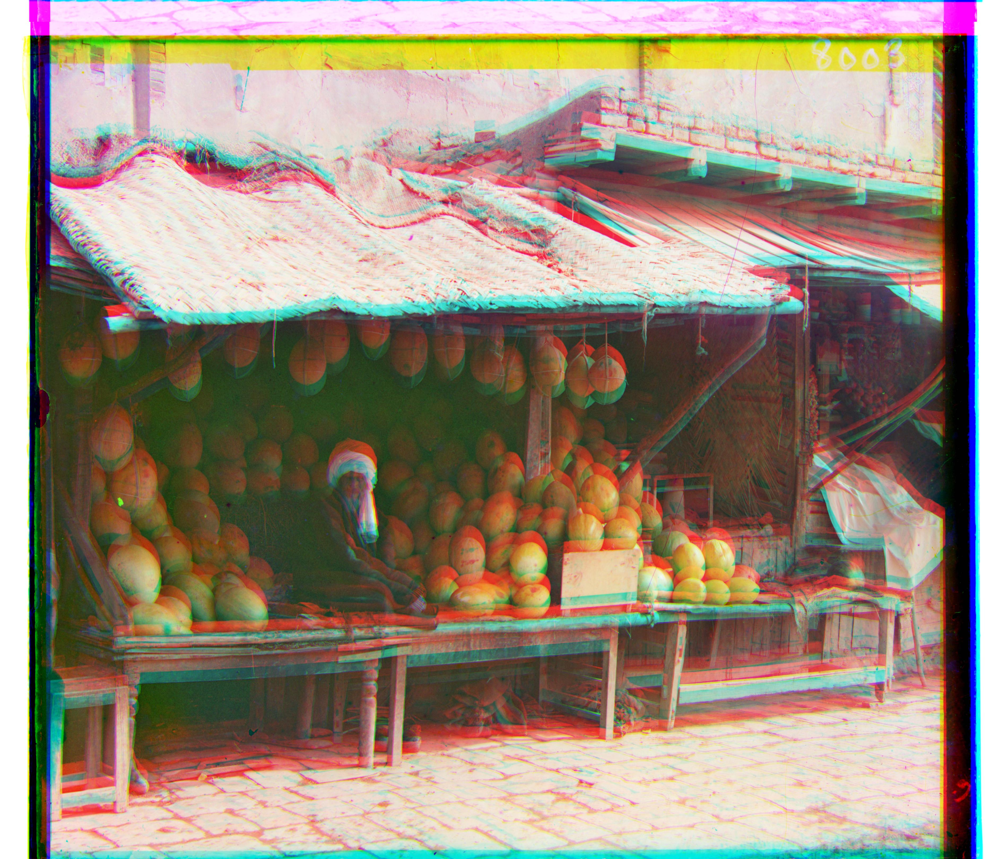
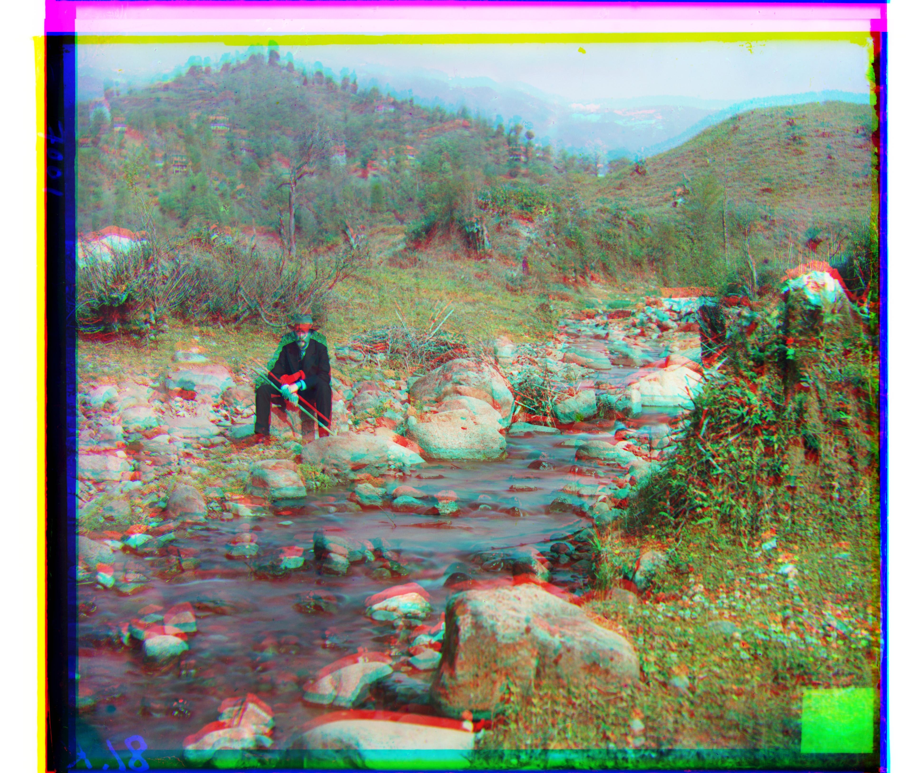
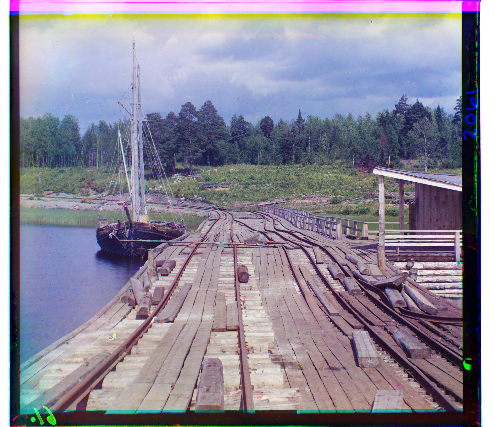

Project 1: Images of the Russian Empire -- Colorizing the Prokudin-Gorskii Photo Collection
Gautam Bhooma · CS 180 · Fall 2026
Single-Scale Alignment


The single-scale alignment was done using a Euclidean distance (L2) loss metric. Essentially, two seperated arrays indicating the intensity by color were separated then aligned, by cropping the edges of each (20%, to remove the borders). Then, they were moved along each other by 15 pixels in every direction, with the loss metric computed at each position. The alignment with the lowest loss metric was then considered the "correct" alignment. After alignments were done for the green and blue slides, and the red and blue slides, they were all stacked to reproduce the image in color.
Multi-Scale Alignment












Single-scale alignment fails for larger images, called .tifs, since testing alignments and computing loss across the massive amounts of data in them costs a significant amount of compute. So, to better analyze images without computing loss on the entire structure, an image pyramid is used. Essentially, the program first recursively halves the width and height of images by averaging all relevant pixels, until reaching a certain size where complete alignment is possible (500 pixels in my case). This was done after originally removing edge areas using the Sobel filter. After the recursion to the coarse-feature image, the two frames are aligned (by checking loss at 35 pixels in every direction). This not only defines a rough displacement, but also a local area to search, which is then searched iteratively through lower/less course levels to fine tune the alignment until reaching the final layer. By only searching a local area, the algorithm avoids the major compute demands necessitated by a complete overall alignment. The alignments for each image are listed in the table below, with "green shift" indicating how much the green slide had to shift to align with blue, as was the case for "red shift". They are in the form of (dy,dx)
| Image | Green Shift | Red Shift |
|---|---|---|
| Monastery | (15, -7) | (3, 2) |
| Tobolsk | (3, 3) | (6, 3) |
| Cathedral | (5, 2) | (12, 3) |
| Wharf | (15, -7) | (83, -16) |
| Emir | (49, 24) | (107, 40) |
| Monastery | (3, 3) | (6, 3) |
| Cathedral | (-3, 2) | (3, 2) |
| Religious Painting | (30, 7) | (70, 6) |
| Chruch | (25, 4) | (58, -4) |
| Three Generations | (54, 12) | (111, 9) |
| Melons | (80, 10) | (177, 13) |
| Icon | (42, 17) | (90, 23) |
| Lilacs | (49, -6) | (96, -24) |
| Self Portrait | (78, 29) | (176, 37) |
| Harvesters | (60, 17) | (174, 14) |
| Ilemselga | (40, 7) | (131, 11) |